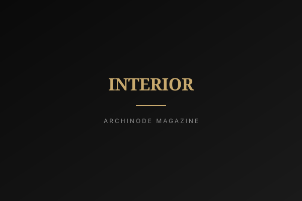

바닥재를 고를 때 제일 먼저 막히는 건 성능이 아니라 이름이다. 장판, 강화마루, 합판마루, 강마루. 한솔홈데코가 합판 강마루 '울트라'를 리뉴얼하며 라인업을 20개 패턴으로 늘렸다. 그 숫자가 의미를 갖기 전에 이 네 단어부터 풀어야 한다. 그리고 그다음, 소비자 눈에는 보이지 않는 두 번째 질문이 따라온다. 패턴 20개는 누가 이고 가는가.
네 단어 풀기
장판은 두루마리로 펴서 까는 비닐 바닥이다. 저렴하고 따뜻하고 발이 편한데 나무 느낌은 안 난다. 강화마루는 톱밥을 눌러 굳힌 판 위에 나무 무늬 필름을 올린 것이다. 단단하고 흠집에 강하지만 밟으면 통통 소리가 나고 물에 약하다. 합판마루는 합판 위에 얇은 진짜 나무를 붙인 것이라 밟는 느낌이 부드럽고 고급스럽지만 무른 편이다. 강마루는 이 둘의 중간이다. 물에 강한 합판을 바닥 삼고, 그 위에 나무 무늬 종이(무늬지)와 단단한 보호층을 올려 합판마루의 부드러움에 강화마루의 튼튼함을 얹었다. 울트라가 정확히 이 구조다. 표면 강도를 높여 긁힘과 얼룩에 강하고 청소와 관리가 쉽다는 게 제조사 설명이다.
규격은 95㎜×800㎜, 165㎜×1205㎜ 두 가지인데 이건 읽는 게 아니라 체감하는 차이다. 폭 95㎜는 줄이 촘촘하게 많이 보인다. 좁은 방이나 복도에서 결이 길게 이어지면 공간이 길어 보이고, 차분하고 클래식한 인상이 난다. 반면 165㎜는 판 하나가 넓어 이음선이 적다. 거실처럼 트인 곳에 깔면 훨씬 시원하고 요즘 집 같은 느낌이 난다. 같은 색이라도 폭이 바뀌면 방 분위기가 통째로 달라진다고 보면 된다.

현장에서 본 패턴 20개
패턴이 20개로 늘어난 것도 생색용 숫자는 아니다. 대표 패턴인 '인피니티 오크'와 '인피니티 그레이'는 오크 나뭇결을 살려 천연 원목에 가까운 질감을 냈고, 월넛·티크 같은 나무색 외에 딥브라운·화이트·블랙 같은 색 패턴도 있다. 선택지가 적으면 집 전체를 한 톤으로 맞출 수밖에 없다. 이 정도면 거실과 방을 다르게 가거나, 아이 방만 따로 쓰는 것도 가능해진다.
다만 패턴 20개는 소비자에겐 선택지지만 대리점엔 재고다. 마루는 로트에 따라 색 편차가 생길 수 있어 현장에서는 한 로트로 몰아 받는 걸 선호하는데, 패턴이 늘면 패턴당 회전이 떨어지고 덜 나가는 품목은 그대로 묵는다. 결국 대리점은 잘 나가는 상위 몇 개만 상시 재고로 깔고 나머지는 주문 대응으로 돌릴 가능성이 크다. 그러면 비인기 패턴은 납기가 길어지고, 공기가 빡빡한 현장에서는 "있는 걸로 하시죠"가 나온다. 라인업 확대가 실제 판매 다양성으로 이어질지는 제조사가 소량 생산을 얼마나 감당하느냐에 달렸다.
규격 2종도 현장에선 성격이 다른 선택이다. 95㎜ 폭은 장수가 많아지는 만큼 붙이는 시간과 재단 로스가 늘어나는 편이지만, 판이 작아 하지의 미세한 요철을 비교적 덜 탄다. 반대로 165㎜×1205㎜는 시공 속도가 붙는 대신 판이 크고 길어 바닥 평탄도 편차를 그대로 드러낸다. 단차나 들뜸이 생겼을 때 눈에 먼저 걸리는 쪽도 넓은 판이다. 규격은 디자인 취향으로만 논의되곤 하는데, 실무에서는 하지 상태를 먼저 보고 정하는 게 맞다.
하자는 대개 제품이 아니라 바닥에서 시작된다
합판 심재 강마루의 하자는 대체로 제품이 아니라 바닥에서 시작된다. 강마루는 전면 접착이 기본이라 하지 평탄화와 모르타르 함수율 관리가 결과를 좌우하고, 바닥 난방이 돌기 시작하면 접착층이 온도 사이클을 반복해서 견뎌야 한다. 접착제 도포량과 오픈타임을 대충 넘긴 현장에서 몇 달 뒤 들뜸 소리가 올라오는 건 흔한 수순이다. 제품 스펙이 올라가도 이 구간이 부실하면 결과는 비슷할 가능성이 크다.
"무늬지는 표면 보호층이 뚫리는 순간 샌딩이라는 선택지가 사라진다. 보수는 사실상 부분 교체이고, 그래서 그 패턴이 몇 년 뒤에도 생산되는지가 곧 A/S 리스크가 된다."
무늬지 기반이라는 구조적 성격이 그렇다. 원목마루나 합판마루는 표면 단판 두께가 허용하는 범위 안에서 샌딩 후 재도장으로 되살릴 여지가 있지만, 인쇄층에는 그 길이 없다. 이야기는 다시 패턴 개수로 돌아온다. 라인업을 20개로 벌린 결정이 장기적으로는 보수용 예비 자재 문제로 돌아올 수 있다는 뜻이다. 납품 때 여분 몇 박스를 남겨두라고 권하는 편이 안전하다.
계약 전에 챙길 두 가지
마루는 카탈로그 사진과 실제 시공면이 정말 다르다. 손바닥만 한 사진에서 예뻐 보이던 색이 집 전체에 쫙 깔리면 훨씬 어둡거나 훨씬 누렇게 나온다. 반드시 실물 샘플을 받아 시공할 집 바닥에 내려놓고, 앉아서가 아니라 서서 내려다보며 봐야 한다. 조명도 변수다. 낮에 창으로 드는 빛, 전구색 조명, 주광색 조명 아래에서 색이 전부 다르게 보인다. 최소 세 조건에서 확인하고 정하는 게 맞다.
가격은 솔직히 모른다. 공개된 정보가 없어 얼마라고 말할 수 없고, 지어내지 않겠다. 대신 견적서를 어떻게 볼지는 말할 수 있다. 마루값은 총액의 일부일 뿐이다. 기존 바닥 철거비, 바닥이 고르지 않으면 평탄화 작업비, 벽 아래 걸레받이 교체비, 폐기물 처리비가 줄줄이 붙는다. 자재 단가만 비교하다가 최종 금액에서 놀라는 일이 정말 흔하다. 견적은 처음부터 "다 포함해서 얼마"로 받아야 한다.
편집장 코멘트
패턴 20개 라인업은 한국 바닥재 시장에 좋은 신호다. 다양성을 비용이 아니라 경쟁 축으로 다루기 시작했다는 뜻이기 때문이다. 다만 SKU 확대가 실제 다양성이 되려면 유통 단이 그 무게를 감당할 수 있어야 한다. 한국 진입을 준비하는 브랜드에게 이건 축소판 교훈이다. 라인업의 폭은 공장에서 하는 약속이지만, 지키는 곳은 대리점이다. 집을 고치는 쪽에게 정리하면 더 짧다. 폭은 바닥 상태를 보고 정하고, 색은 조명 세 가지에서 확인하고, 여분 박스를 남겨둘 것.